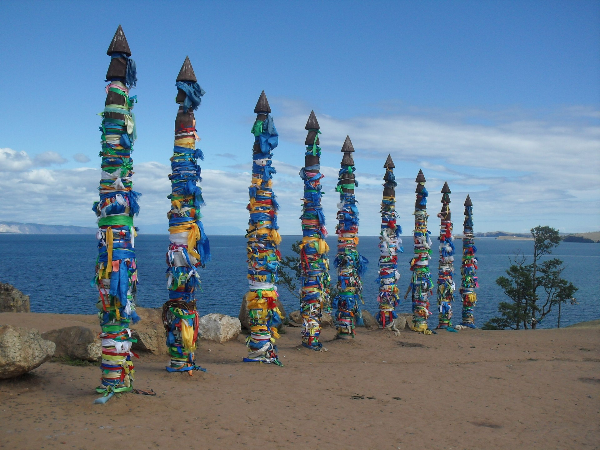

Lake Baikal

The world's oldest, largest fresh-water rift lake always interested me. I mean look at the size of the lake on a map. That's like basically a sea, dude. Anyways, this page might be a lil disorganized so as you see it it's a V1.
Basic geography
- Ulan-Ude: The city to the east of the lake is Ulan-Ude. It's the capital of the Republic of Buryatia, with a significant, you guessed it, Buryat population.
- Ivolginsky Datsan, effectively the center of the Buddhism in Russia/USSR
- Biggest Lenin head statue lol
- Irkutsk: A stop along the Trans-Siberian Railway route. It's a city to the west of the lake. Culture is more "Russian" in this city.
- Olkhon Island: The third largest lake island in the world, with a population of 1,744. It's super dry, only 20 cm of rainfall per year. From baikal.ru,
- "This phenomenon is stipulated by the fact that air masses on their way to the island get over the Primorsky and Baikal Ridges and warmed coming down to the Baikal depression. Therefore, the relative humidity decreases and precipitation on the western coast of the lake and on the island is infrequent and short-time."
- Listvyanka: A village on the western shore, approx 70 km from Irkutsk.
Potential Ideas
- Siberian/indigenous village homestay
- Eat Omul
- Ice scuba diving
- Hot springs at Goryachinsk Resort
- Ice skating, nordic skiing, dog sledding, fishing
- Wildlife tours. Specifcally see a Baikal seal (nerpa)
- Hiking near or around the lake. Research if you need permits beforehand.

Random stuff
- Irina Pantaeva, who walked for the 1997 Mugler Haute Couture show, is Buryat. She's the second one to walk here
- And so is Oleg Yakovlev, one of the members of the boy band Ivanushki International. Revi is a good track.
- In 1993, six members of a seven-person hiking group led by Lyudmila Korovina died in mysterious circumstances in the Khamar-Daban mountain range.